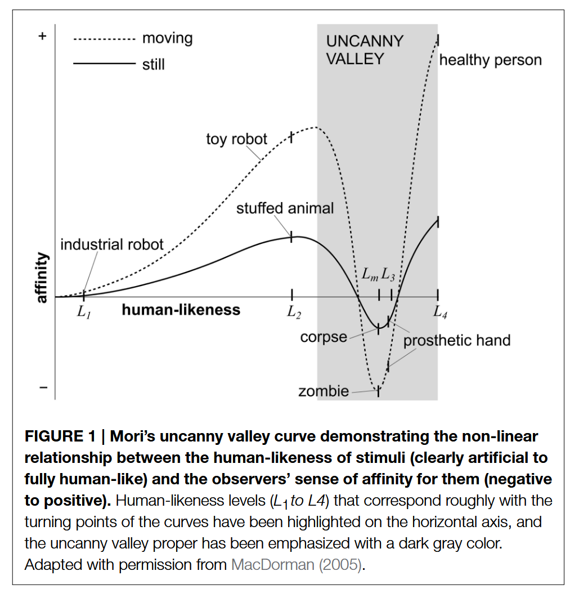

a <- 1
b <- 4
c <- a+b
d <- c-2
c+d[1] 8All the slides and styles
Sabou Rani Stocker
November 10, 2025
I am an optional subtitle
It is possible to commit no mistakes and still lose. That is not a weakness; that is life.
Jean-Luc Picard
This is a very interesting fancy callout!
This is normal content.
Here, we have some text. Penguins are the cutest animals in the universe!
Here we have some more text!!
This slide has the content centered.
This slides has some quote options on it.
This bullet point is a statement corroborated by some authors
This bullet point has an inline-citation (Abramovitch, Short, and Schweiger 2021)
And this is a quote.
Abdurahman et al. (2024), p. 34
This slide is when you have light images because they don’t always work with dark background.

Of course, you can still use the regular background.
This is a slide where you can ask an important question?
You can also add Code to your slide and highlight certain lines of code:
You can also add a slide with long and complex code, and highlight the relevant lines:
import requests
from bs4 import BeautifulSoup
import pandas as pd
base_url = "https://www.psychologie.uzh.ch"
overview_url = base_url + "/de/bereiche/uebersicht.html"
response = requests.get(overview_url)
soup = BeautifulSoup(response.text,"html.parser")
## Level 1 subpages
subpage_links = []
all_data = []
for link in soup.find_all("a",href=True):
href = link["href"]
if href.startswith("/de/bereiche/") and href.endswith(".html"):
subpage_links.append(base_url+href)
print(base_url+href)
for subpage_url in subpage_links:
print(f"\nScraping {subpage_url}")
response = requests.get(subpage_url)
sub_soup = BeautifulSoup(response.text,"html.parser")
chair = sub_soup.find("h1") ## e.g. Entwicklungspsychologie
chair_name = chair.get_text(strip=True)
print(chair_name)
tables = sub_soup.find_all("table", class_="basic") ## e.g. "Entwicklungspsychologie: Kinder- und Säuglingsalter"
for i, table in enumerate(tables):
print(f"\nTable {i+1} in {subpage_url}")
table_data = []
table_data.append(chair_name)
rows = table.find_all("tr")
for i, row in enumerate(rows):
cells = row.find_all(["th","td"])
length = len(cells)
print(f"\nlen: {length}")
if length == 2:
title = cells[0].get_text(strip=True) if len(cells) > 0 else ""
table_data.append(title)
link = cells[1].find("a",href=True)
table_data.append(link)
print(f"\niteration: {i}")
print("Length = 2")
print(f"\nTitle: {title}")
print(f"\nLink: {link}")
if link:
full_description = []
subsubpage_link = base_url + link["href"]
subresponse = requests.get(subsubpage_link)
subsub_soup = BeautifulSoup(subresponse.text, "html.parser")
description = subsub_soup.find("section", class_="ContentArea")
if description:
section_text = description.get_text(strip=True, separator=" ")
full_description.append(section_text)
else:
print("No section found")
description_text = " ".join(full_description)
table_data.append(description_text)
print(f"\ndescription: {description_text}")
elif length == 1 and i == 1:
print(f"\niteration: {i}")
print("Length = 1")
name = cells[0].get_text(strip=True) if len(cells) > 0 else ""
print(f"\nName: {name}")
table_data.append(name)
elif length == 1 and i == 2:
print(f"\niteration: {i}")
print("Length = 1")
position = cells[0].get_text(strip=True) if len(cells) > 0 else ""
print(f"\nPosition: {position}")
table_data.append(position)
print(table_data)
all_data.append(table_data)
df = pd.DataFrame(all_data)
df.to_csv("beautifulsoup.csv",index=False,sep=";",quoting=1,encoding="utf-8-sig")You can also add external websites to your Slides: